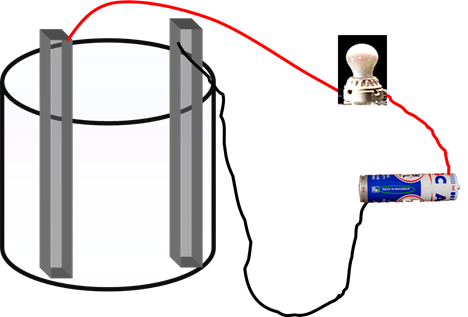

Percobaan Larutan Elektrolit dan Larutan Non Elektrolit
TUJUAN
mengetahui perbedaan antara larutan elektrolit kuat, elektrolit lemah, dan non elektrolit serta mengetahui ciri-ciri dan jenis-jenis larutan elektrolit kuat, elektrolit lemah, dan non elektrolit.
DASAR TEORI
Larutan adalah campuran homogen dua zat atau lebih yang saling melarutkan dan masing-masing zat penyusunnya tidak dapat dibedakan lagi secara fisik. Zat yang jumlahnya lebih sedikit di dalam larutan disebut (zat) terlarut atau solut, sedangkan zat yang jumlahnya lebih banyak daripada zat-zat lain dalam larutan disebut pelarut atau solven. Komposisi zat terlarut dan pelarut dalam larutan ini dinyatakan dalam konsentrasi larutan, sedangkan proses pencampuran zat terlarut dan pelarut membentuk larutan disebut pelarutan atau solvasi.
Larutan elektrolit adalah larutan yang memiliki kemampuan menghantarkan listrik . Larutan elektrolit terbagi atas 2, yaitu Elektrolit kuat dan Elektrolit lemah.
Larutan Elektrolit lemah memiliki ciri-ciri sebagai berikut:
• Penghantar arus listrik yang baik atau kuat
• Terionisasi dengan semurna
• Tetapan atau derajat ionisasi a=1
• Apabila diuji, larutan elektrolit kuat memiliki lampu yang terang dan muncul banyak gelembung gas
Larutan Elektrolit lemah memiliki ciri-ciri sebagai berikut:
• Penghantar listrik yang kurang baik atau lemah
• Terionisasi sebagian
• Tetapan atau derajat ionisasi (a) 0< a <1
• Apabila diuji, larutan elektrolit lemah nyala lampunya lemah dan muncul gelembung gas yang sedikit
Larutan non elektrolit adalah larutan dalam pelarut air yang tidak memiliki kemampuan untuk menghantarkan arus listrik. Umumnya garam merupakan elektrolit kuat yang terionisasi semua dalam air menjadi komponen basa (kation) dan komponen asam (anion).
Larutan Non Elektrolit memiliki ciri-ciri sebagai berikut:
• Tidak dapat terionisasi
• Tidak dapat menghantarkan arus listrik atau isolator
• Tetapan atau derajat ionisasi (a) a = 0
• Jika diuji, Larutan Non Elektrolit, tidak menyala dan tidak muncul gelembung gas.
Alat dan Bahan
• Lampu led 6 volt
• Kabel
• Elektroda (2buah paku)
• Batu batre 9 volt
• Gelas Kimia
Prosedur
1. Rangkai alat seperti pada gambar dibawah ini:

2. Masukkan larutan yang akan diuji kedalam gelas kimia, masukkan kedua buah elektroda kedalam larutan tanpa membuat keduanya saling bersentuhan
3. Amati apa yang terjadi
4. Setelah menguji sebuah larutan maka kita harus membersihkan terlebih dahulu elektroda yang digunakan dengan cara dibilas dengan air biasa lalu dikeringkan dengan tisu agar pada saat kita menguji larutan lain, larutan tersebut tidak terkontaminasi/tercampur
Data Hasil Pengamatan
No
Lampu yang Diamati
Kondisi Lampu
Kondisi Elektrode
Jawaban
1
Air Laut
2
Air Cuka
3
Air PAM
4
Air Jeruk
5
Air Sprite
6
KOH
7
HCl
8
Air Sabun
9
Soda Kue
10
Air Hujan
11
Larutan Gula
12
NaCl
Pertanyaan
1. Berdasarkan percobaan yang kamu lakukan, kelompokkanlah yang termasuk elektrolit kuat, elektrolit lemah dan larutan non elektrolit.
2. Identifikasi apa yang menjadi pembeda larutan elektrolit dan larutan non elektrolit?
3. Sebutkan contoh lain dari larutan elektrolit kuat, elektrolit lemah dan non elektrolit dalam kehidupan sehari hari.